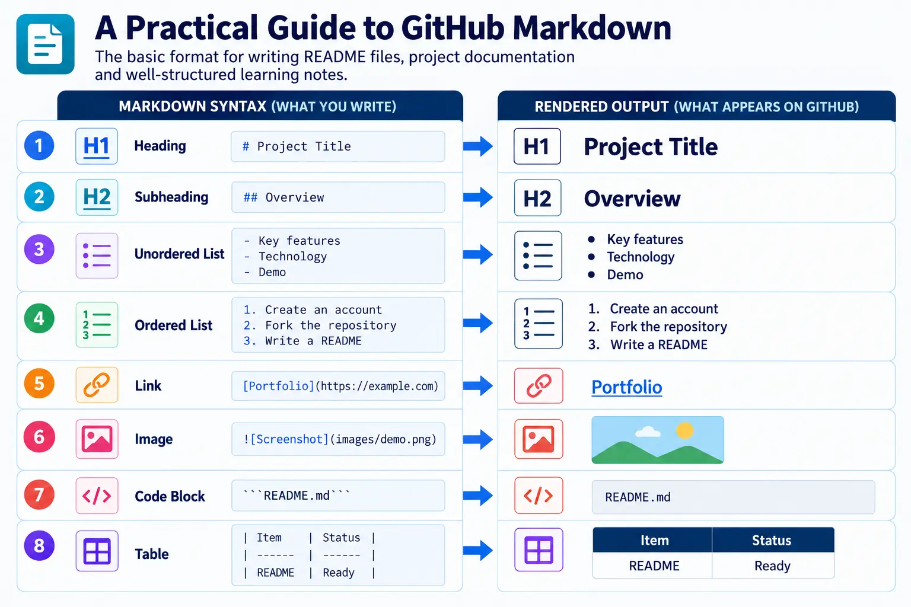
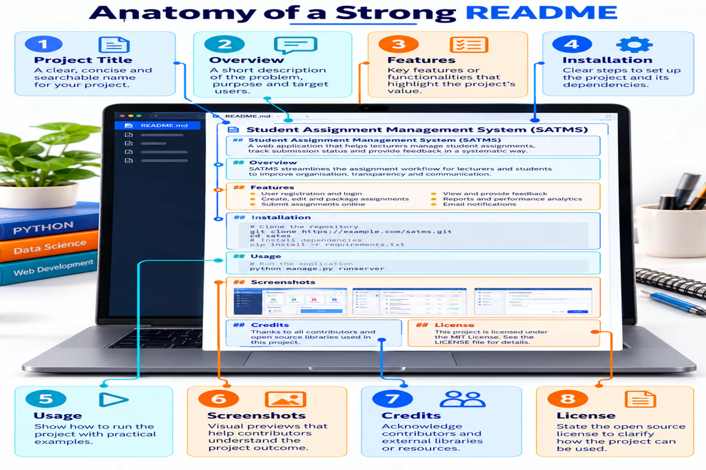

Document your learning
Markdown uses simple symbols to format headings, lists, links, images, code, tables and task lists.

Anatomy of a useful README
A README should explain the project before presenting technical details. Include its purpose, main features, setup instructions, usage, screenshots or evidence, contribution information and appropriate acknowledgements.

Headings and emphasis
# Main Title ## Section Title ### Subsection **Bold text** *Italic text*
Lists and links
- GitHub - Figma - Google Stitch 1. Create 2. Commit 3. Publish [Course Website](https://drshahizan.github.io/scst1133/)
Images and code
 Use the `index.html` file. ```html <h1>Digital Tools</h1> ```
Table and checklist
| Tool | Output | |---|---| | GitHub | Website | | Figma | Prototype | - [x] Create repository - [ ] Publish website
Images, folders and optional badges
Store screenshots in a predictable folder such as images/ and use descriptive alternative text. A badge can summarise a useful repository signal, but it should never replace written documentation.
| Badge or signal | What it communicates |
|---|---|
| Stars | How many users bookmarked the repository; it is not a quality score. |
| Forks | How many copies were created for independent development. |
| Issues / Pull Requests | Visible collaboration activity and proposed changes. |
| Contributors | People represented in the commit history. |
| Visitors | An optional external counter; treat the number as approximate. |

## Demo
Describe what the reader will see, then add the tested URL.
## Contributors
- Name — role and contributionRecommended README template
# SCST1133 Digital Tools ## Student Information - Name: Your Name - Matric Number: Your Matric Number - Section: Section 03 or 04 ## Course Information - Course: SCST1133 Data Engineering Ecosystem - Lecturer: Assoc. Prof. Dr. Mohd Shahizan Othman ## Digital Tools ### GitHub Describe what you learned and add your GitHub Pages URL. ### Figma [View my Figma prototype](PASTE-URL-HERE) ### Google Stitch Add your prompt and screenshot. ### Google Vids [Watch my presentation](PASTE-URL-HERE) ## Reflection Write a short reflection on your learning experience.
✓
Always preview before committing. Check headings, links, image paths and table alignment in the GitHub Preview tab.
Expected output
- A structured README using headings, links, images, a table and checklist.
- Student and course information is complete.
- A reflection section is ready for final submission.